CB-CIS Congo Basin Catchment Information System
Outil de Gestion Intégréé des Ressources en Eau du Bassin du Congo
Système d’informations sur 1740 sous-unités du Bassin du Congo
> Identification > Climat > Hydrologie > Caractéristiques physiographiques > Usage de l’eau > Risques et plus encore ...
Le bassin versant
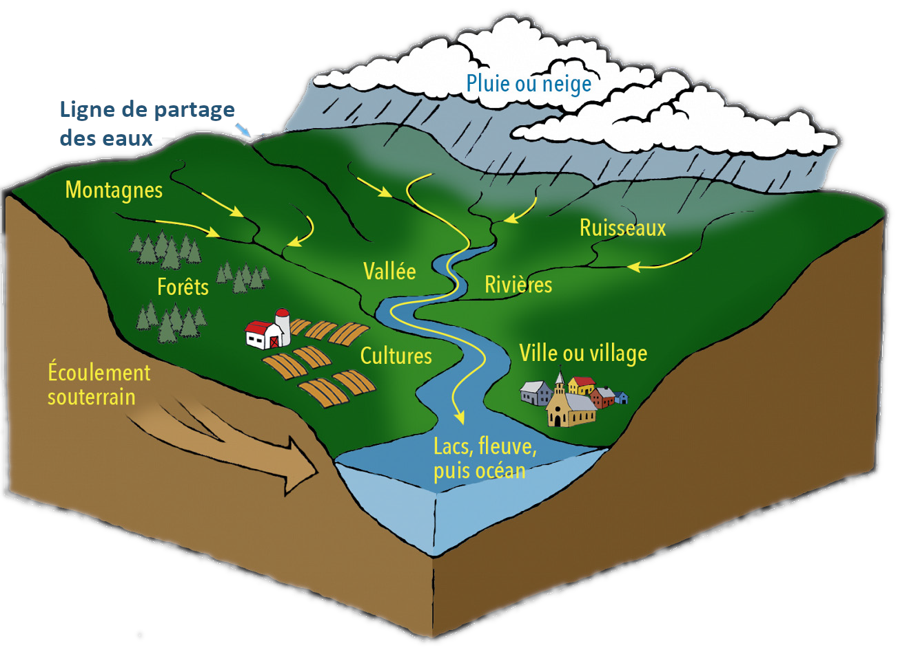
Un bassin versant représente un territoire géographique qui assure le drainage des cours d’eau depuis leurs sources jusqu’au point de leur sortie appelé exutoire.
Selon le degré de développement et de hiérarchisation du réseau hydrographique, le bassin versant peut-être classé en sous bassins ou unité de drainage de différents ordres d’importance primaire, secondaire, tertiaire, etc., qui constituent donc les unités de prédilection pour la gestion de l’eau au regard de différents usages qui en émergent.
Le bassin versant est l’unité naturelle de production de l’eau, permettant ainsi le maintien de plusieurs services des ressources en eau, notamment : alimentation en eau potable et assainissement, production agricole et énergétique, transport par navigation, maintien de la biodiversité, etc. Ceci se traduit par les fonctions de subsistance, commerciales et environnementales à l’échelle d’un bassin versant.
La nécessité de mettre en place un cadre de classification des sous bassins est évidente dans le Bassin du Congo à cause de ses hétérogénéités, de sa nature non jaugée et des besoins pressants d’utilisation des ressources en eau. Ces besoins comprennent la quantification des approvisionnements et des demandes actuels et futurs, qui incluent également les impacts des changements futurs associés au climat et à l’occupation des terres, ainsi que les politiques opérationnelles des ressources en eau. Ce besoin est également motivé par de nombreuses préoccupations de gestion des ressources en eau à l’échelle du bassin, notamment les initiatives de transfert d’eau pour alimenter les zones arides.
Cette classification initie la mise en oeuvre de la Gestion Intégrée des Ressources en Eau (GIRE) dans le Bassin du Congo, qui peut être définie comme un processus systématique pour le développement durable, l’attribution et le suivi de l’utilisation des ressources en eau dans le contexte des objectifs sociaux, économiques et environnementaux. L’approche GIRE vise à améliorer l’efficacité et la coopération intersectorielles à tous les niveaux en matière d’aménagement et gestion durables des ressources en eau, y compris des interventions sectorielles spécifiques.
Le bassin versant du Congo
Le Bassin du Congo s’étend sur une superficie d’environ 3,7 millions de km2 et inclut neuf pays, dont le 2/3 de la superficie totale est détenu par la RD Congo. Avec son module moyen annuel de 41000 m3/s à l’exutoire, le Bassin du Congo est le deuxième plus grand bassin fluvial du monde après celui de l’Amazone. Avec près de 52% du volume total d’eau douce de l’Afrique, le Bassin du Congo détient un potentiel hydraulique élevé pour le développement de multiples biens et services des ressources en eau, nécessaires à l’expansion économique a l’échelle régionale.
Le Bassin du Congo émerge ainsi comme un élément important dans la coopération régionale pour faire face aux questions de pénurie d’eau et assurer la résilience des populations dans le contexte de changement climatique.
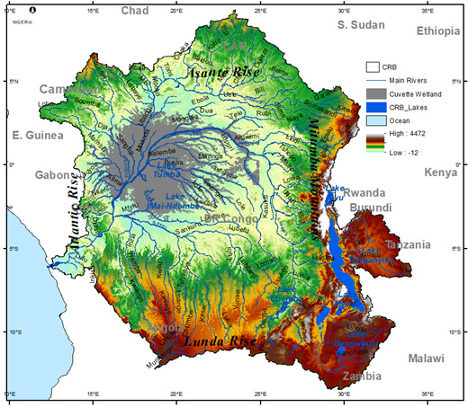
Les défis de gestion durable des ressources en eau dans le Bassin du Congo
La gestion durable des ressources en eau dans le Bassin du Congo est une question cruciale, mais les ressources techniques disponibles sont presque toujours insuffisantes pour en élaborer des stratégies. Dans le Bassin du Congo, les besoins de gestion et d’aménagement des ressources en eau sont énormes. Les demandes en eau ne sont pas seulement attendues de neuf pays riverains qui constituent le Bassin du Congo, mais aussi d’autres régions de l’Afrique en pénurie d’eau. Le défi stratégique pour l’avenir est, par conséquent, celui de garantir l’eau en quantité et qualité suffisantes en vue de satisfaire les demandes concurrentielles croissantes pour les besoins agricoles, commerciaux, domestiques, énergétiques, environnementaux et industriels. Cependant, il est difficile de relever ce défi en l’absence d’un système d’information hydrologique fiable à l’échelle spatiale et temporelle appropriée « unité de gestion des ressources en eau » pour la prise de décision. Bien que nous soyons, en une certaine mesure, conscients de la menace qui pèse sur l’eau dans le Bassin du Congo, et par conséquent sur la vie, force est de constater que les efforts appropriés pour y faire face demeurent encore disparates. A cette difficulté, s’ajoute également l’absence d’une interface de connaissance sur la dynamique de l’eau, sa distribution dans le temps et l’espace, les interactions dont elle fait l’objet ainsi que la façon dont nos efforts devraient être coordonnés pour minimiser sa dégradation et assurer sa durabilité. Il y a donc un besoin urgent de mettre en place un système d’information sur les ressources en eau du Bassin du Congo, capable de promouvoir l’accès amélioré aux ressources disponibles, planifier les investissements, et répondre aux questions de l’heure sur les enjeux de la sécurité de l’eau, notamment le transfert d’eau, le changement climatique et risques des catastrophes naturelles, la pollution et disparition des cours d’eau, l’ accès à l’eau potable et l’assainissement, la navigation sécurisée pour l’échange des biens et des services, la sécurité alimentaire et énergétique.
Quid de CB-CIS ?
https://cbcis.info
CB-CIS (de l’anglais : Congo Basin Catchment Information System) est une interface de connaissance qui fournit des informations de haute portée scientifique et en temps quasi réel sur la structure, les processus et les fonctions des ressources en eau à l’échelle des sous bassins versants, mieux « unité de gestion des ressources en eau », ainsi que sur les impacts des changements dans l’environnement physique et la société.
CB-CIS est un outil de planification qui sectorise le Bassin du Congo en unités de gestion des ressources en eau et rend disponible les informations adéquates, nécessaires à la Gestion Intégrée des Ressourcées en Eau à l’échelle de ces unités.
CB-CIS fournit des lignes directrices cohérentes pour faciliter la résilience des communautés face aux effets néfastes des changements environnementaux.
CB-CIS s’aligne en appui à la stratégie 2020-2030 du secteur de l’eau en République démocratique du Congo, et l’agenda 2063 de l’Union Africaine dans le secteur de l’eau.
CB-CIS est le premier système d’information sur les ressources en eau dans Bassin du Congo.
Structure des informations dans CB-CIS 1.0
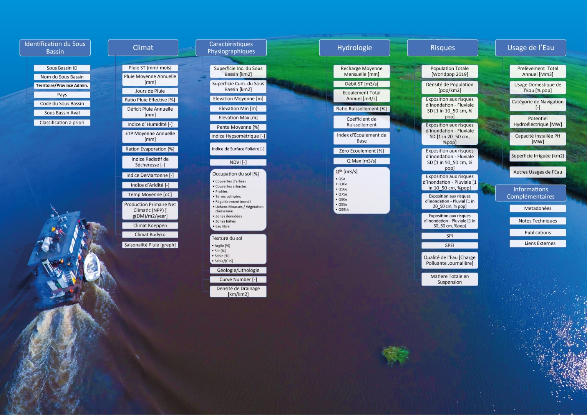
Bénéfices avec CB-CIS
Les bénéfices procurés par CB-CIS sont énormes, du point de vue scientifique et de gestion. Il permet de :
-
Améliorer les connaissances scientifiques sur la dynamique du système des ressources en eau du Bassin du Congo, leur distribution dans le temps et l’espace, les interactions dont elles font l’objet ;
-
Fournir un cadre des mesures pour orienter les investigations hydrologiques, et rendre disponibles les informations là où les mesures au sol sont inexistantes ou quasi impossibles à obtenir, ce qui permettra de vérifier les hypothèses et de développer de nouvelles approches prédictives et robustes pour traiter les questions de gestion de l’eau dans des conditions des changements environnementaux ;
-
Inventorier les ressources disponibles à l’échelle locale ou unité réduite de gestion, évaluer leurs potentialités ou leur valeur économique, et orienter les investissements pour améliorer l’accès aux services des ressources en eau, et procéder à des analyses sur des régions selon leurs potentialités et aussi leur sensibilité aux perturbations naturelles et anthropiques (gage des pratiques rationnelles de conservation et gestion des ressources en eau) ;
-
Fournir un cadre de dialogue entre parties prenantes pour la gestion de l’eau par unité réduite ou sous bassin, où les comités de gestion de l’eau à l’échelle des sous bassins sont établis et jouent un rôle prépondérant dans l’approvisionnement des services et la conservation des ressources ;
-
Aider les parties à établir un langage commun et une communauté de pratique pour les questions communes de gestion et d’aménagement dans le Bassin du Congo ;
-
Donner des réponses fiables aux enjeux de l’heure sur la sécurité de l’eau dans le Bassin du Congo, notamment : le transfert d’eau, le changement climatique et les risques des catastrophes naturelles, la qualité de l’eau et la pollution des cours d’eau, et l’accès amélioré aux services des ressources en eau (besoins agricoles, commerciaux, domestiques, énergétiques, environnementaux et industriels), tout en fournissant des lignes directrices cohérentes pour permettre la résilience de la société.
Impact de CB-CIS
L’impact attendu de cet outil est large, car il contribuera à l’élaboration des politiques et stratégies de gestion de l’eau, et la mise en oeuvre des projets de planification et d’aménagement des ressources en eau dont la faisabilité était rendue difficile par le manque d’informations adéquates. Il contribuera également à orienter les investissements, d’accroître l’efficience économique pour le développement des ressources en eau, éviter la redondance des actions, maximiser les avantages socio-économiques et soutenir le développement durable.
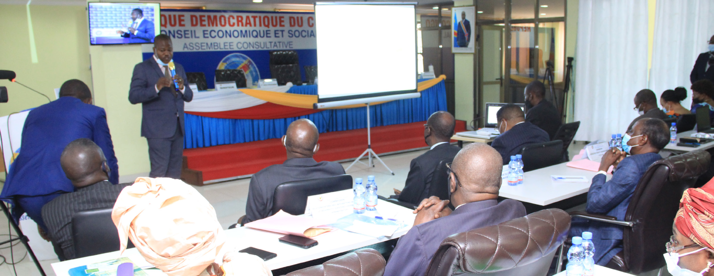
Utilisateurs de CB-CIS
Cette interface de connaissance permettra à un large éventail d’utilisateurs, notamment les institutions académiques et de recherche, les institutions gouvernementales et le secteur privé, les industries, les investisseurs, les organisations des bassins versants et des ONG, d’accéder facilement à des informations de haute qualité pour guider et éclairer la prise de décision de gestion intégrée des ressources en eau à l’échelle locale et transfrontalière.
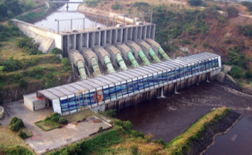
Hydroelectricité
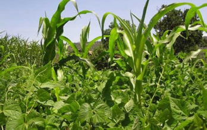
Agriculture
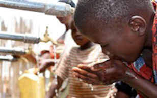
Usage domestique
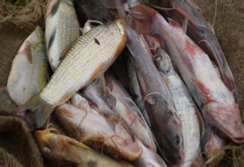
Pêche
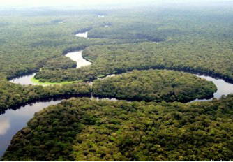
Environnement
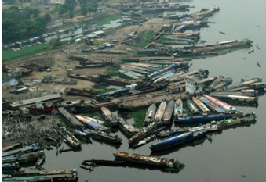
Transport
Développeur
CB-CIS est développé par le Centre de Recherche en Ressources en Eau du Bassin du Congo (CRREBaC), avec l’appui financier du programme de recherche FLAIR (Future Leader African Independent Researcher) de la Société Royale de Grande Bretagne et de l’Académie Africaine des Sciences.
Les concepts et les méthodes utilisés pour développer CB-CIS sont présentés dans la publication de Tshimanga et al. (2020) intitulée :
Cadre conceptuel
Prochaines étapes de développement
Dans la deuxième phase du développement de CBCIS, CRREBaC collabore avec les partenaires tels que le Ministère du Plan et le Comité d’Actions de l’Eau, Hygiène et Assainissement (CNAEHA) de la RDC ; les Organisations de Bassin Versant ; le laboratoire LEGOS, CNES et IRD en France ; les Universités Bristol et Leeds au Royaume Uni ; UNESCO. Les prochaines étapes incluent :
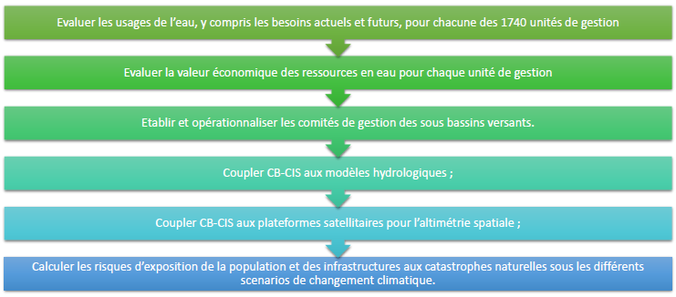